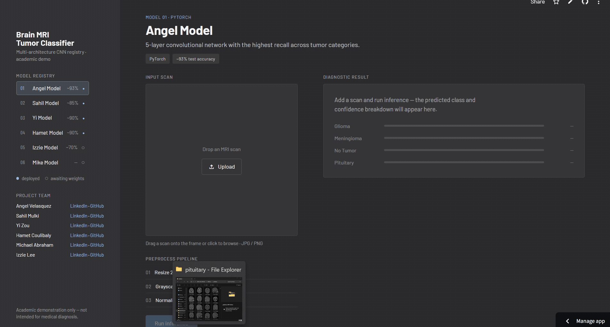

Brain Tumor Detection & Classification
PyTorch
Scikit-Learn
Streamlit
Developed a Deep Convolutional Neural Network (CNN) to classify 7,200+ brain MRI scans across 4 clinical categories, deployed with an interactive Streamlit inference dashboard.
- 93.9% Test Accuracy & 97.6%+ Recall on unseen external datasets using Cross-Entropy loss.
- 16% Recall Boost on Glioma class via custom data augmentation (rotation, contrast jitter, normalization).